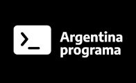

Estudios de Programación

Conocimientos de los lenguajes Gobstones, Javascript y Ruby.
Utilizacion de recursos de frontend y backend,
conocimientos en Scrum, Github, HTML, CSS, Boostrap, Angular, Typescript, MySQL, UML, Java,
Java Poo y Sprint boot, Seguridad JWT, uso de Firebase, Heroku y Heroku Add On.
año 2022
Estudios Universitarios